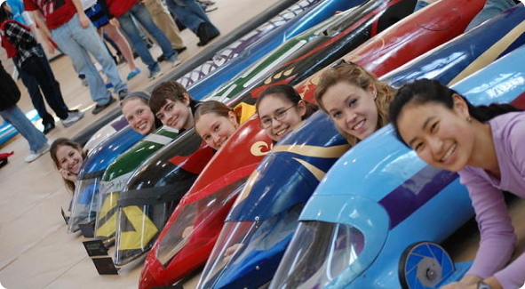

HOME > BUGGY REFERENCE > WHAT IS BUGGY?
Buggy (also called "Sweepstakes") is a unique race that has been held on and behind the Carnegie Mellon University campus during the spring carnival since 1920. It is part uphill relay race (in which the baton is a vehicle and driver pushed by runners), and part downhill gravity racing with exciting sharp turns and speeds up to 40mph.
Here is the 2017 Men’s Championship Race in which SDC set the all time record.
We’re not trying to tell anybody what to do, but we did buggy while we were in school, and it meant so much to us that we had to start the Buggy Alumni Association and make this site. If you’re curious about it, you should definitely give it a try and we’ll bet you get hooked.
Over 400 Carnegie Mellon students (both men and women, mostly undergrads) per year participate as part of one of the 12-15 organizations – about half of which are greek. The race is run by a volunteer student committee called Sweepstakes.
Raceday: CMU’s Spring Carnival, generally in mid-April on Friday and Saturday 8am – noon.
The course is mostly located behind CMU’s main campus in Schenley Park. It starts at the intersection of Margaret Morrison and Tech St near Margaret Morrison Hall, loops around Flagstaff hill turning right, and finishes at the intersection of Tech St and Frew St. See Course and watch CMUtv’s Meet The Buggy Course Video for more detailed information.
Teams are generally broken down into three major roles: pushers, drivers, & mechanics. Pushers train on and off the course to improve their times and their exchanges, watch the Pushers Video. Drivers gain experience navigating the course during the weekend “free roll” practices. Mechanics do the engineering, designing and building new buggies from the raw materials and then maintaining and tuning them to be as fast as possible. Of course, you can participate in more than one of these roles. To see how buggies are made, watch CMUtv’s Apex Build Video.
Learn More >If you are currently part of a Buggy Team we have gathered some resources to help you!
Check them out here!